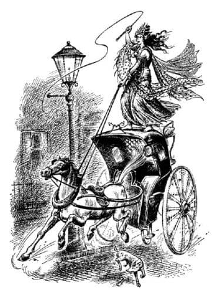
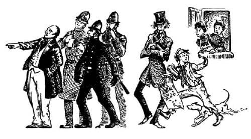
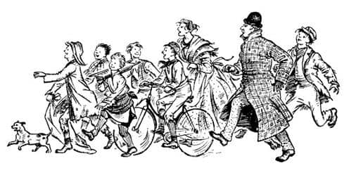

Ön Kapıda Olanlar
“Köle, arabayı daha ne kadar bekleyeceğim?” diye gürledi Cadı. Andrew Dayı korkuyla geriledi. Şimdi Cadı yanında olduğu için, kendine aynada bakarken aklından geçen bütün o gülünç düşünceleri unutmuştu. Fakat Letty Teyze hemen doğrulup odanın ortasına geldi.
“Bu genç insanın kim olduğunu sorabilir miyim Andrew?” dedi buz gibi bir sesle.
“Mükemmel biri – ç..çok önemli bir y..yabancı” diye kekeledi.
“Palavra!” dedi Letty Teyze ve sonra Cadı’ya dönerek, “Derhal evimi terk et, utanmaz aşifte, yoksa polis çağıracağım.” Kolsuz giysisine bakarak Cadı’nın sirkte çalışan biri olduğunu sanmıştı.
“Bu kadın da kim?” dedi Jadis. “Seni mahvetmeden dizlerinin üstüne çök, köle.”
“Lütfen bu evde ağır sözler etme genç bayan” dedi Letty Teyze.
Kraliçe’nin boyu o an daha da uzamış gibi geldi Andrew Dayı’ya. Gözleri ateş saçıyordu. Kolunu aynı Charn’daki gibi uzatarak, oradaki sarayın kapılarını tuzla buz eden o Korkunç Söz’ü söyledi. Fakat hiçbir şey olmadı, yalnızca Letty Teyze o sözcüklerin sıradan İngilizce sözler olduğunu düşünerek dedi ki:
“Düşündüğüm gibi. Bu kadın sarhoş. Sarhoş. Doğru dürüst konuşamıyor bile.”
İnsanları toza çevirme gücünün, bizim dünyamızda geçerli olmadığını anladığı o an, Cadı için kâbus olmalıydı. Fakat bir saniye için bile soğukkanlılığını kaybetmedi. Hayal kırıklığını düşünmeksizin ileri atıldı, Letty Teyze’yi boynundan ve dizlerinden kavradı, sanki bir oyuncaktan daha hafifmiş gibi başının üzerine kaldırdı ve odanın öbür yanına fırlattı. Letty Teyze hâlâ havadayken, hizmetçi (çok heyecanlı bir sabah geçirmekteydi) kapıdan başını uzatarak, “Arabanız geldi efendim” dedi.
Cadı, “Düş önüme, köle” dedi Andrew Dayı’ya. Andrew Dayı “Kabul edilemez bir şiddet – gerçekten protesto etmeliyim” gibi bir şeyler mırıldanıyordu, fakat Jadis’in bir bakışıyla sesini kesti. Odadan ve sonra da evden dışarı çıktılar. Sokak kapısı arkalarından kapanırken Digory merdivenlerden aşağı koşarak indi.
“Eyvah” dedi. “Cadı Londra’da başıboş ve Andrew Dayı’yla beraber. Şimdi neler olacağını çok merak ediyorum.”
“Oh, Digory efendi” dedi gerçekten olağanüstü bir gün geçirmekte olan hizmetçi, “sanırım Bayan Ketterley kötü durumda.” Bunun üzerine ikisi de ne olduğunu görmek için oturma odasına koştular.
Eğer Letty Teyze tahta zemine ve hatta halının üzerine düşseydi sanırım bütün kemikleri kırılırdı, fakat büyük bir şansla şiltenin üzerine düşmüştü. Letty Teyze yaşlı ve dayanıklı bir kadındı, tüm teyzeler böyleydi o günlerde. Burnuna biraz tuzlu su çekip birkaç dakika oturduktan sonra, bir-iki morluktan başka hiçbir sorununun olmadığını söyledi. Az sonra da duruma hâkim olmaya başlamıştı.
“Sarah” dedi, daha önce hiç böyle bir gün geçirmemiş hizmetçiye, “hemen polise git ve ortalıkta tehlikeli bir delinin dolaştığını söyle. Bayan Kirke’ün öğle yemeğini ben götürürüm.” Bayan Kirke, kuşkusuz, Digory’nin annesiydi.
Annesinin yemeğini verdikten sonra, Digory ve Letty Teyze kendi yemeklerini yediler. Bundan sonra Digory ciddi ciddi düşünmeye başladı.
“Sorun, Cadı’yı mümkün olduğunca çabuk kendi dünyasına geri göndermek, ya da en azından bizim dünyamızdan uzaklaştırmak. Ne olursa olsun, evde kızıp köpürmesine izin verilmemeli. Annem onu görmemeli. Ve mümkünse, Londra’da başıboş dolaşması engellenmeli.” Cadı, Letty Teyze’yi yok etmeyi denediği zaman Digory odada değildi, fakat Charn’da onun kapıları yok ettiğini görmüştü: Onun korkunç gücünü ve dünyamızı fethetmek istediğini biliyordu ama bizim dünyamıza gelince gücünü kaybettiğini bilmiyordu. Anlayabildiği kadarıyla şu anda Cadı, Buckingham Sarayı’nı ya da parlamento binalarını toza dönüştürüyor olabilirdi ve mutlaka pek çok sayıda polis şimdiden küçük toz yığınları haline gelmişti. Yapabileceği hiçbir şey yok gibi görünüyordu. “Fakat yüzükler mıknatıs gibi” diye düşündü Digory. “Eğer ona dokunurken sarı yüzüğü takabilirsem, ikimiz de Dünyalar Arasındaki Orman’a gideriz. Acaba orada yeniden güçsüzleşir mi? Bu, o yerin ona yaptığı bir şey miydi, yoksa kendi dünyasından uzaklaştırılmasının şoku muydu? Sanırım bu riski göze almam gerekiyor. Ancak o canavarı nasıl bulacağım ki? Nereye gideceğimi söylemezsem Letty Teyze’nin dışarı çıkmama izin vereceğini sanmıyorum. Onu nerede arayacağım hakkında da en ufak bir fikrim yok. Bütün Londra’da arasam, otobüs, tramvay için bir sürü paraya ihtiyacım olacak. Oysa benim iki peniden fazla param yok. Acaba Andrew Dayı hâlâ onunla beraber mi?”
Sonunda yapabileceği tek şeyin Andrew Dayı ile Cadı’nın geri döneceğini umarak beklemek olduğuna karar verdi. Eğer gelirlerse, dışarıya koşup Cadı’nın eve girmesine fırsat vermeden ona dokunarak yüzüğü takması gerekiyordu. Bu, bir kedinin fare deliğini gözetlemesi gibi, ön kapıyı gözetlemesi anlamına geliyordu, yerini bir an bile terk etmemeliydi. Bunun üzerine yemek odasına gitti ve deyiş yerindeyse “yüzünü cama yapıştırdı”. Bu pencere, ön kapıya çıkan merdivenleri ve caddenin her iki yanını da görebileceğiniz ve böylece sizden habersiz kimsenin ön kapıya ulaşamayacağı cumba penceresiydi. “Polly ne yapıyor acaba?” diye merak etti Digory.
Yavaş geçen o ilk yarım saat boyunca bunun üstünde epey düşündü. Fakat sizin merak etmenize gerek yok, çünkü ben size anlatacağım. Polly, ayakkabıları ve çorapları ıslak olarak eve döndüğünde, akşam yemeğine çok geç kalmıştı. Nerede olduğunu ve neler yaptığını sorduklarında Digory Kirke ile beraber olduğunu söyledi. Israrla sorguladıklarında ayaklarını su dolu bir havuzda ıslattığını ve havuzun da bir ormanda olduğunu söyledi. Ormanın nerede olduğunu sorduklarında bilmediğini söyledi. Parklardan birinde olup olmadığını sorduklarında ise, gerçeğe yakın olarak, oranın bir çeşit park olabileceğini söyledi. Polly’nin annesi bütün bunlardan, onun kimseye söylemeden Londra’nın bilmediği bir kesimine gittiği, yabancı bir parka gidip göletlere girerek eğlendiği sonucunu çıkarmıştı. Sonunda, çok yaramaz olduğu ve bir daha aynı şeyi yaparsa “o Kirke denen oğlanla” oynamasına bir daha izin verilmeyeceği söylendi. Sonra yemeğin en güzel kısımlarından yoksun bırakıldı ve tam iki saatliğine yatağa gönderildi. O günlerde herkesin başına sık sık gelen bir şeydi bu.
Digory yemek odasının penceresinden dışarı bakarken, Polly yatağında yatıyordu ve her ikisi de zamanın ne kadar yavaş geçmekte olduğunu düşünüyorlardı. Ben şahsen, Polly’nin yerinde olmayı yeğlerdim. O yalnızca iki saatin geçmesini bekleyecekti fakat Digory üç-beş dakikada bir, bir taksinin ya da fırıncının arabasının ya da kasabın oğlunun köşeden döndüğünü görüp “İşte, Cadı geliyor” diye düşünüyordu ve sonra da yanıldığını anlıyordu. Sanki hiç bitmeyecekmiş gibi görünen bu tetikte bekleme anları arasındaki sürede saatlerin tıkırtısı duyuluyor ve büyük bir sinek – ulaşılması mümkün olmayacak kadar yüksekte – camda vızıldayıp duruyordu. Öğleden sonraları sakin, cansız ve sürekli koyun eti kokan o evlerden biriydi burası.
Onun bu uzun bekleyişi ve gözcülüğü sırasında geçen küçük bir olayı size anlatmam gerekiyor, çünkü daha sonra bu yüzden çok önemli bir şey oldu. Bir kadın Digory’nin annesine üzüm getirmişti. O sırada yemek odasının kapısı açık olduğundan, Digory, kadınla Letty Teyze’nin koridorda konuştuklarını duyabiliyordu.
“Ne güzel üzümler!” diyordu Letty Teyze. “Eminim ona bir şey iyi gelecekse, o da bu üzümlerdir. Fakat zavallı, sevgili küçük Mabel! Korkarım ki iyileşmek için, gençlik ülkesinin meyvesine ihtiyacı var. Artık bu dünyadaki hiçbir şeyin ona pek yararı dokunmaz.” Sonra ikisi de seslerini alçalttılar ve işitemediği bir sürü şey söylediler.
Eğer gençlik ülkesi hakkındaki sözleri birkaç gün önce işitmiş olsaydı, Letty Teyze’nin, büyüklerin yaptığı gibi, özel bir şey kastetmeden konuştuğunu düşünecek ve bu onu pek ilgilendirmeyecekti. Az kalsın şimdi de öyle düşünecekti. Fakat aniden beyninde bir şimşek çaktı, (Letty Teyze bilmese bile) gerçekten başka dünyalar vardı ve onlardan birini ziyaret etmişti. Bunun gibi, belki bir yerlerde gerçek bir gençlik ülkesi vardı. Neden olmasın? Başka bir dünyada annesini gerçekten iyi edecek bir meyve bulunabilirdi. Ve – şey – hani olmayacak bir şeyi çok istediğinizde neler hissettiğinizi bilirsiniz ve neredeyse bu beklentiye karşı mücadele edersiniz, çünkü birçok kez hayal kırıklığına uğramışsınızdır. Digory, böyle hissediyordu işte. Fakat beklentisini bastırmaya çalışması boşunaydı. Gerçekten – bu, gerçekten doğru olabilirdi. Daha şimdiden birçok garip şey olmuştu ve sihirli yüzükler de cebindeydi. Ormandaki her göletten gidebileceğiniz dünyalar olmalıydı. Hepsini deneyebilirdi. Ve sonra – annem yeniden sağlıklı olur. Her şey yeniden olması gerektiği gibi olur. Cadı’yı gözlemesi gerektiğini tümden unuttu. Aniden dörtnala koşan atların seslerini işittiğinde eli, yüzükleri koyduğu cebine gitmek üzereydi.
“Aman Tanrım, bu da ne?” diye düşündü Digory, “İtfaiye arabası mı? Acaba yangın nerede? Aman Tanrım, buraya geliyor. Bu o!”
Onun kim olduğunu söylememe gerek yok.
Önce araba göründü. Sürücü yeri boştu. Arabanın üstünde – ayakta duran – araba bir tekerleği havada, hızla köşeyi dönerken büyük bir ustalıkla kendini dengeleyen Jadis; Kraliçeler Kraliçesi, Charn’ın belası Jadis vardı. Bütün dişleri görünüyor, gözleri ateş gibi parlıyordu. Uzun saçları arkasında bir kuyruklu yıldızın kuyruğu gibi dalgalanıyordu. Atı acımasızca kırbaçlıyordu. Hayvanın burun delikleri kıpkırmızıydı ve iri iri açılmıştı. Ağzının iki yanı köpüklerle kaplıydı. At sokak lambasının direğini sıyırtarak sokak kapısına doğru delice koştu, sonra şaha kalktı. Araba direğe çarparak paramparça oldu. Cadı, tam zamanında mükemmel bir sıçrayışla atın sırtına atladı. Sonra eğilerek atın kulağına bir şeyler fısıldadı. Bu sözler onu sakinleştirmek için değil de, delirtmek için söylenmiş olmalıydılar. Bir an sonra at yine şaha kalkmıştı ve kişnemesi bir çığlık gibiydi; toynakları, dişleri, gözleri ve dalgalanan yelesi ile çıldırmış gibiydi. Sadece usta bir binici onun üzerinde durmayı becerebilirdi.

Digory nefes almaya fırsat bulamadan bir dizi olay patlak verdi. İlk arabanın hemen arkasından ikinci bir araba hızla geldi; onun içinden redingotlu şişman bir adamla bir polis indi. Sonra içinde iki polisin bulunduğu üçüncü bir araba ve ardından ıslıklarla ve alkışlarla, bisikletli yaklaşık yirmi kişi (çoğunluğu çırak çocuklar) geldi. En arkadaysa yayalardan oluşan bir kalabalık vardı; hepsi koşmaktan kıpkırmızıydı ama belli ki eğleniyorlardı. Caddedeki evlerin bütün pencereleri açıldı ve kapılarında hizmetçiler ya da kâhyalar göründü. Eğlenceyi kaçırmak istemiyorlardı.

Bu arada ilk arabanın enkazı arasından, yaşlı bir centilmen sarsak hareketlerle çıkmaya çabalıyordu. Birkaç kişi ona yardım etmek üzere ileri atıldı. Ne var ki birisi bir yöne, diğeri de öbür yöne çektiğinden, belki de enkazdan tek başına çıkması daha çabuk olabilirdi. Digory yaşlı centilmenin Andrew Dayı olduğunu tahmin etmişti ancak, silindir şapkası kafasına tamamıyla geçtiği için yüzü görünmüyordu.
Digory dışarıya fırladı ve kalabalığa karıştı.

“İşte bu kadın, işte bu kadın” diye bağırdı şişman bir adam Jadis’i göstererek. “Görevini yap memur bey. Benim dükkânımdan yüzlerce, binlerce sterlinlik eşya çaldı. Boynundaki şu inci gerdanlığa bak. O benim. Gözümü de o morarttı, daha ne bekliyorsun?”
“Evet, morarttı memur bey” dedi kalabalıktan biri. “Görüp göreceğin en güzel morluk da bu. Ne harika bir eser! Vay be! Amma da kuvvetli bir kadın!”
“Gözünün bütün istediği şey, üzerine güzel, çiğ bir biftek koymandır bayım” dedi kasabın oğlu.
“Evet, şimdi” dedi en kıdemli polis, “bütün bunlar ne demek oluyor?”
Şişman adam “Sana diyorum ki o—” diye söze başlamıştı ki başka birisi:
“Arabadaki yaşlı herifin kaçmasına izin vermeyin. Kadını o kışkırttı” dedi.
Andrew Dayı olduğu kesinlik kazanan yaşlı centilmen az önce ayağa kalkmayı başarmış, moraran yerlerini ovuşturuyordu. “Evet, şimdi” dedi polis ona dönerek, “bütün bunlar ne demek oluyor?”
“Benf – kadrs – sunf” diye sesler geldi şapkanın altından.
“Şakayı bırak şimdi” dedi polis sert bir şekilde. “Bu gülünecek bir olay değil. Çıkar şu şapkayı da, gör.”
Bunu söylemek yapmaktan daha kolaydı. Andrew Dayı boşu boşuna bir süre uğraştıktan sonra iki polis siperinden tutarak güçlükle şapkayı çıkardılar.
“Teşekkürler, teşekkürler” dedi Andrew Dayı zayıf bir sesle. “Teşekkürler. Aman! Çok fena sarsıldım. Birisi bana küçük bir bardak kanyak verebilirse—”
“Şimdi beni dinle, lütfen” dedi polis, küçük bir kurşunkalem ve çok büyük bir not defteri çıkararak. “Oradaki genç kadından sen mi sorumlusun?”
“Dikkat!” diye bağırdı birkaç kişi ve polis tam zamanında bir adım geriye çekildi. At çifte atmıştı ve bu onu öldürebilirdi. Sonra Cadı, atın yüzünü kalabalığa doğru döndürdü. Atın arka ayakları kaldırımdaydı. Cadı o ana kadar, atı arabanın enkazından kurtarmak için koşum takımlarını kesmekle meşguldü. Elinde uzun, parlak bir bıçak vardı.
Tüm bu sürede Digory, Cadı’ya dokunabileceği bir yere gelmeye çalışıyordu. Bu pek de kolay değildi çünkü ona yaklaşabileceği tarafta bir sürü insan vardı. Öbür tarafa geçebilmek içinse, Ketterley’lerin evinde bodrum katı olduğu için, evin etrafını çevreleyen parmaklıklar ile atın çifteleri arasından geçmek zorundaydı. Atlar hakkında bir şeyler biliyorsanız ve özellikle o anda o atın ne halde olduğunu görebilseydiniz, bunun çok tehlikeli bir şey olduğunu anlardınız. Digory atlar hakkında çok şey biliyordu, fakat dişlerini sıkmıştı ve uygun bir fırsat çıkar çıkmaz koşmaya hazırdı.
Melon şapkalı ve kırmızı yüzlü bir adam insanları omuzlayarak kalabalığın önüne geçti.
“Merhaba memur bey” dedi, “Onun bindiği at – benim. Hurdaya döndürdüğü araba da benimdi.”
“Birer birer lütfen, birer birer” dedi polis.
“Fakat zamanımız yok ki” dedi Arabacı. “Bu atı senden daha iyi tanırım. Sıradan bir at değildir o. Babası, süvari birliğinde bir subayın saldırı atıydı, evet. Ve eğer bu genç kadın onu kışkırtmaya devam ederse, cinayet çıkar. Bırak yanına gideyim.”
Polis memuru attan uzaklaşmak için iyi bir bahane bulduğuna çok memnun olmuştu. Arabacı bir adım yaklaştı, Jadis’e baktı ve pek de nazik olmayan bir sesle:
“Şimdi, bayan, ben atın başını tutayım, siz de inin. Siz bir leydisiniz ve bütün bu kabalıklarla uğraşmak istemezsiniz değil mi? Eve gidip, iyi bir bardak çay içerek sessizce uzanırsanız kendinizi çok daha iyi hissedeceksiniz.” dedi. Aynı zamanda, şu sözleri ederek elini atın başına doğru uzattı: “Sakin ol Çilek, sakin ol artık ihtiyar.”
O anda Cadı ilk kez konuştu.
“Köpek!” dedi. Duru ve soğuk sesi tüm diğer sesleri bastırdı: “Çek elini soylu atımdan. Bana İmparatoriçe Jadis derler.”